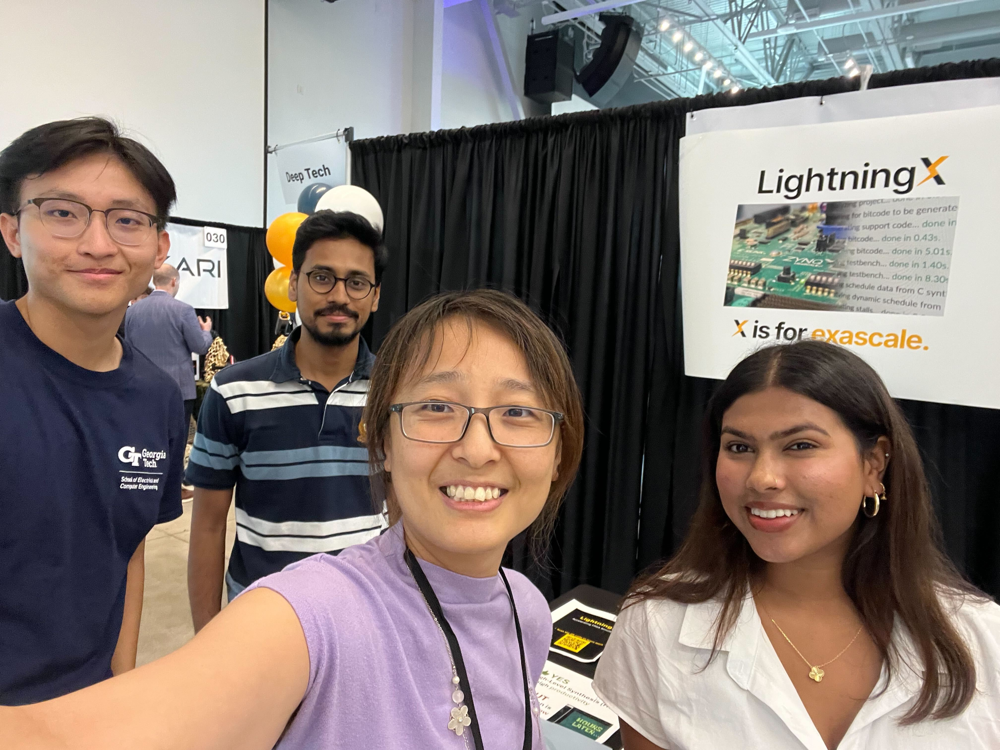
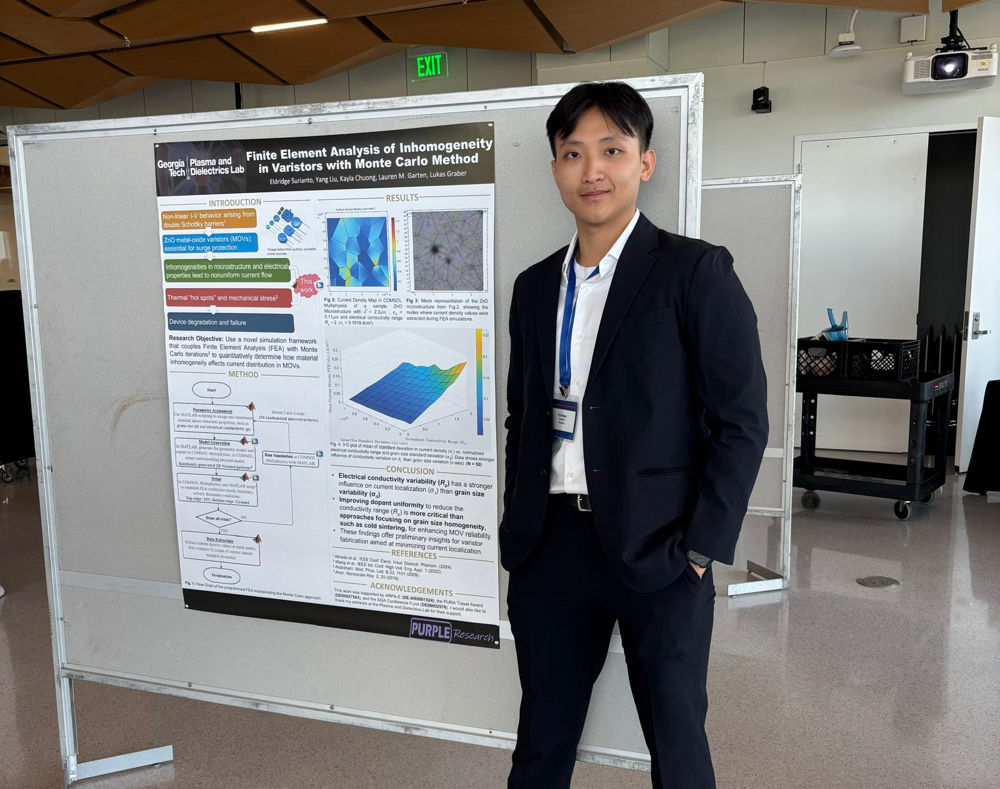
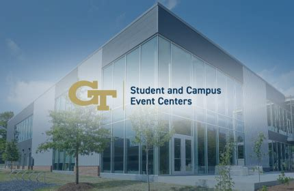

Beyond my technical projects, this section explores other important dimensions of my life—including my involvement in research, leadership in extracurricular organizations, and experiences that have shaped me outside the classroom. Whether it’s presenting research findings, organizing community initiatives, or pursuing personal interests that inspire me, these moments reflect the values and passions that drive my growth as both an engineer and an individual.

Research Software Engineer @ LightningX | Sharc Lab | Georgia Tech
August 2025 – Present
- Refactored the waveform tracing backend for a Rust-based High-Level Synthesis (HLS) simulation framework, achieving a 50% reduction in overall simulation execution time.
- Designed and implemented a new waveform output module that significantly reduced file size and storage overhead, enabling more efficient debugging and reverse engineering of complex parallel and pipelined HLS designs.

Undergraduate Research Assistant @ Plasma & Dielectrics Lab Georgia Tech
- Developed MATLAB scripting pipelines for modeling zinc oxide voltage-dependent resistor (MOVs) microstructures in COMSOL Multiphysics and assigning semiconductor granular properties, reducing Finite Element Analysis (FEA) setup time by 95%.
- Executed thousands of FEA simulations using the Monte Carlo method to analyze the impact of material inhomogeneity on current distribution, generating statistical insights to optimize MOV design for high-energy handling power electronics.
- Presented my research methodology and findings at the Lester Eastman Conference 2025
Explored Vivado RTL & Vitis HLS
- Developed a strong foundation in FPGA design and hardware-software co-design using Xilinx Vivado for RTL (Verilog HDL) and Vitis HLS for high-level synthesis and hardware acceleration.
- Explored digital logic, synthesis, and HLS optimizations through hands-on projects such as UART FSM and fixed-point matrix multiplication.
- Focused on iterative performance tuning, modular architecture, and robust hardware-software integration.
- Gained practical experience with Linux-based toolchains, debugging multi-language programs, and Electronic Design Automation (EDA) tools.
- Enhanced my ability to design efficient and scalable hardware systems in collaborative engineering environments.
As a college student living on campus, I often find myself unable to determine whether certain waste, like the tons of different types of plastics, can be put into the recycling bin. Therefore, I sought to fix this problem for myself. I leveraged the YOLOv5's powerful and comprehensive Object Detection Model to train my own model composed of various common college student waste, and wrote a Flask script to run my simple HTML web interface. The final product is a low-power server (ran on the Jetson Orin Nano) capable of identifying waste types and providing proper disposal instructions.

Guest Services Manager
Student & Campus Event Centers, Georgia Tech
Student & Campus Event Centers, Georgia Tech
May 2024 – July 2024
- Delivered logistical, technical, and customer service support for campus events, ensuring seamless operations for gatherings with over 1,000 participants.
- Monitored facility safety and operational conditions across multiple departmental buildings, proactively addressing issues to maintain a safe environment.
- Coordinated the setup and arrangement of thousands of chairs and tables for large-scale events, including the GT PSA Muslim Student Tournament and final exams week.
- Demonstrated adaptability and leadership by supporting event operations during a campus-wide chilled water and air conditioning outage.
Singapore National Service
As an Armament Technician with the Singapore Armed Forces, I performed daily maintenance and repair on various heavy artillery and firearms, including the Singapore Lightweight Howitzer, and supported artillery combat exercises. Concurrently, I served as Chairman of the NSF Council for the 6th Army Maintenance Base, where I managed the council acting as an intermediary between regular servicemen and over 150 Full-time Servicemen (NSFs). In this role, I addressed requests and feedback to superiors, maintained high cohesion and cordiality among technicians, and organized unit anniversary and cultural events for over 200 attendees, demonstrating strong event-planning and coordination skills. My outstanding conduct earned me a personal testimonial from my Commanding Officer.